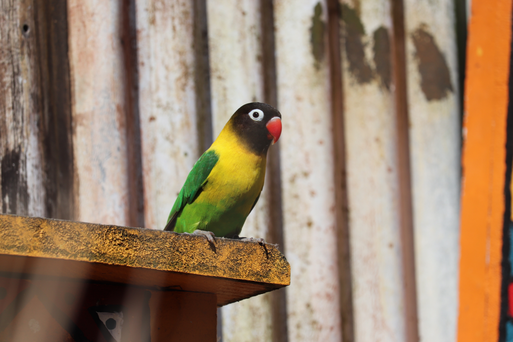
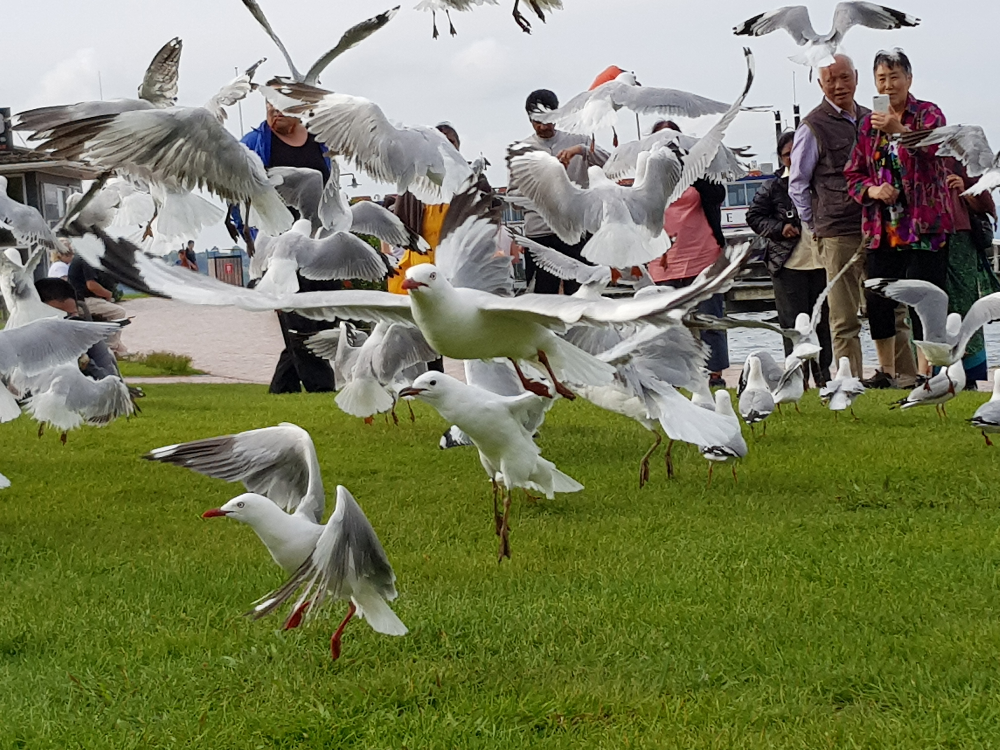
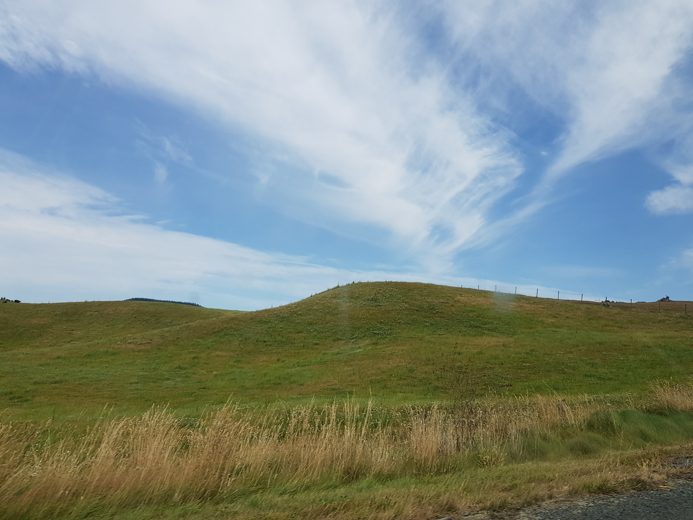
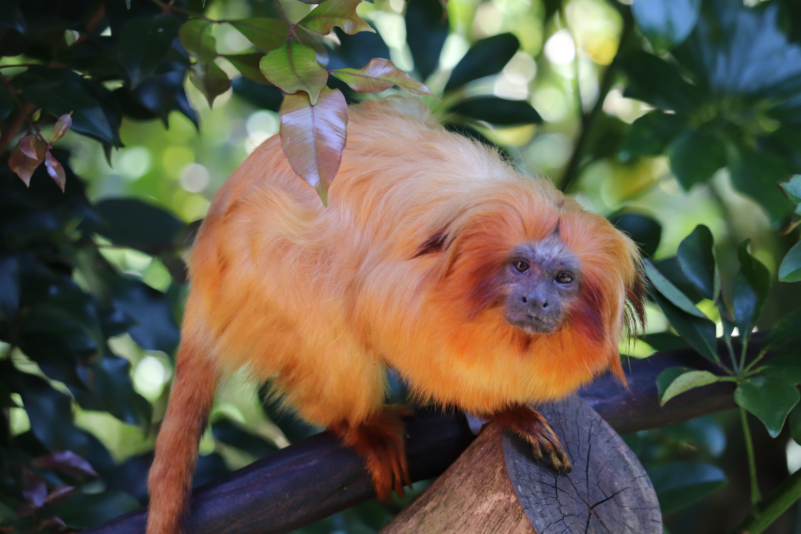

APERTURE PRIORITY MODE (AV)
Aperture priority, often abbreviated A or Av on a camera mode dial, is a setting on some cameras that allows the user to set a specific aperture value while the camera selects a shutter speed to match it that will result in proper exposure based on the lighting conditions as measured by the camera's light meter. It is probably the most used mode my most photographers and is very convinient to apply and test your skills from. Simply choose a f/stop number that you want to use and the camera does the rest. Its also a great way to get out of using automatic mode.
SHUTTER SPEED PRIORITY MODE (TV)
Shutter speed refers to the amount of time a camera's sensor is exposed to light. Once the shutter is open, light hits the sensor, which creates the photo. Naturally, a faster shutter speed means the sensor is exposed to light for less time, which limits the amount of light that hits the sensor. Conversely, a slow shutter speed lengthens the time the sensor is exposed to light, thus maximizing the amount of light that hits the sensor.Shutter priority (usually denoted as S on the mode dial), also called time value (abbreviated as Tv), refers to a setting on some cameras that allows the user to choose a specific shutter speed while the camera adjusts the aperture to ensure correct exposure.If you want to freeze a fast moving bird, animal, or car in your photo, using Shutter Priority mode will allow you to do so by setting a fast shutter speed. A shutter speed of anything faster than 1/500th of a second is considered ideal for freezing an object, but this may vary depending on the speed of the subject.COMPOSITION / FRAMING
Composition is a very important element in photography. It refers to the way in which something is put together or arranged inside a particular image. There are a lot of factors that build up the art of composing an image. These including framing and having the right position, thinking about what you want to capture and then aim for the subject as well as making sure no important elemnents are being chopped off from your frame. For the picture on the left I decided to take a photo of a group of birds flying. The main focal point of this photo is the bird right in the center that creates an interesting point to look at first. The birds at the sides create more pattern and repetition which enhances the overall look of this photo
RULE OF THIRDS
The rule of thirds is a type of composition in which an image is divided evenly into thirds, both horizontally and vertically, and the subject of the image is placed at the intersection of those dividing lines, or along one of the lines itself. The rule of thirds is one of the most common rules in photography, and one of the easiest to learn and to use successfully. To understand and use the rule of thirds, simply break up an image into thirds both horizontally and vertically, as seen here. The four intersection points of these lines, and the four lines themselves, are where subjects, or strong compositional lines of a photograph, can be placed to create a strong, balanced image.
NEGATIVE SPACE
Negative space is the area surrounding the main subject in a photograph which is left unoccupied. Put simply, it is the space around the object itself that helps define the positive space (or main focus).Negative space surrounding your main subject can portray a sense of scale/size to the viewer. This can be useful if you’re a landscape photographer as shooting subjects close up can take away the feel of the location from the audience. Stepping back from the edge of your shot can often have more impact to the image than it would if you were to be right in the action. The further back you are from your subject, the smaller they would appear, achieving a greater atmosphere, with a completely different ambiance. This works perfectly when standing next to large structures and buildings, you’ll also see instances where hikers are stood atop of a mountain.